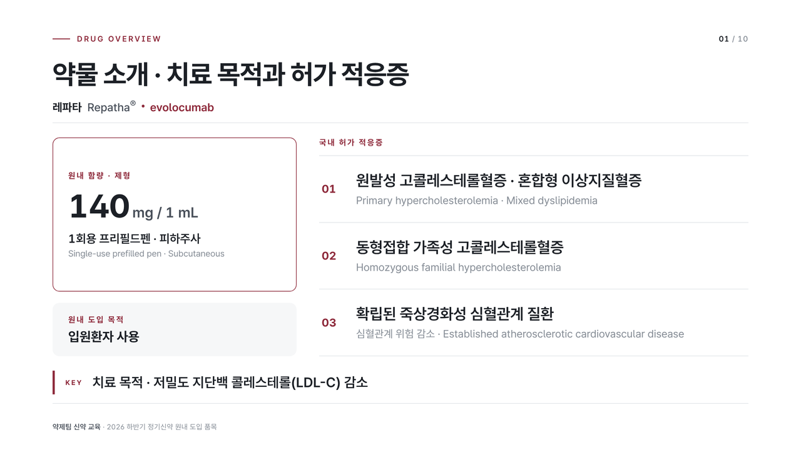
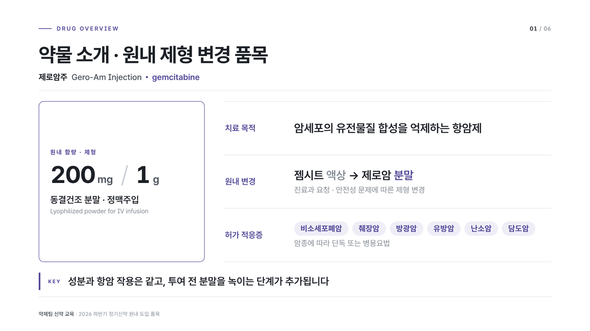
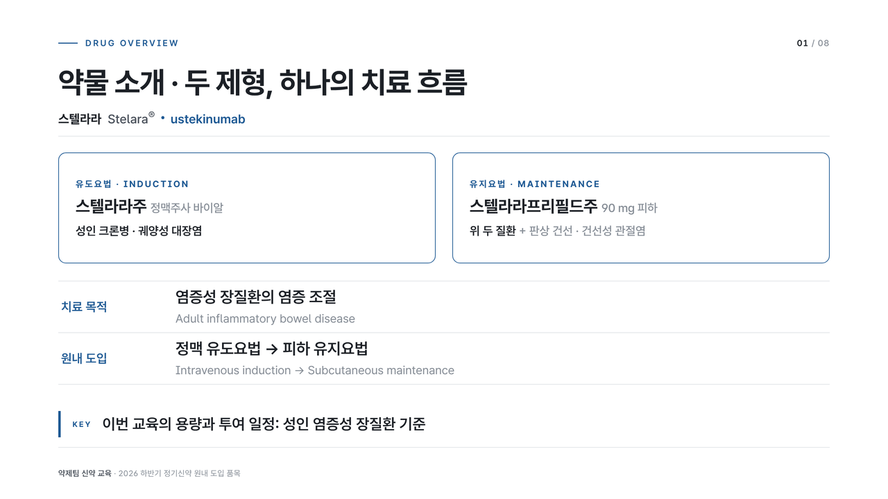
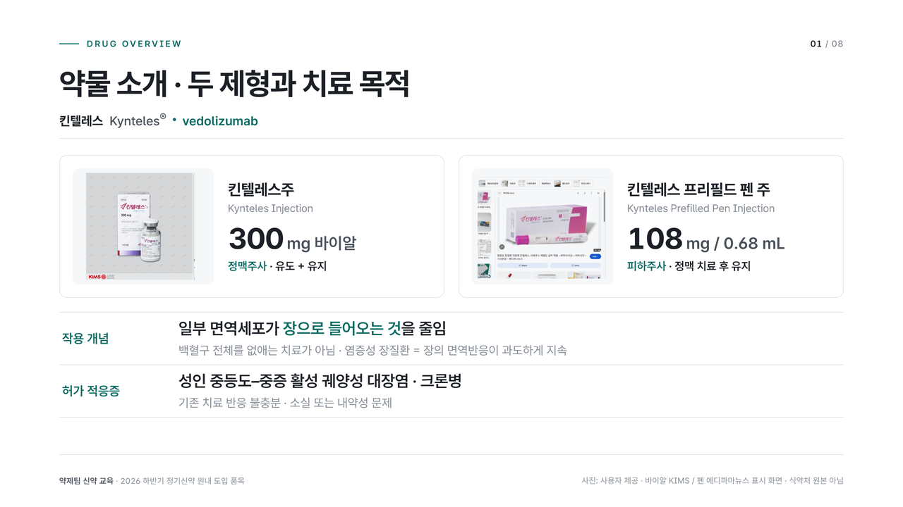
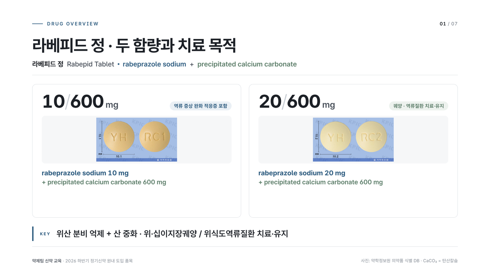

PHARMACY EDUCATION · 2026 H2
약제팀 신약 교육
2026 하반기 정기신약 원내 도입 품목 · 한국어 설명과 공식 기전 영상을 순서대로 이어서 시청합니다.

01
레파타
Repatha® · evolocumab
PCSK9 기전 · 용량 · 투여 누락 · 펜 보관

02
제로암주
Gero-Am Injection · gemcitabine
DNA 복제 · 부작용 · 재구성 농도

03
스텔라라
Stelara® · ustekinumab
IL-12/23 p40 · 정맥 유도 · 프리필드 유지

04
킨텔레스
Kynteles® · vedolizumab
α4β7 · 정맥 조제 · 프리필드 펜

05
라베피드 정
Rabepid · rabeprazole + CaCO₃
두 성분 기전 · 상호작용 · 보관